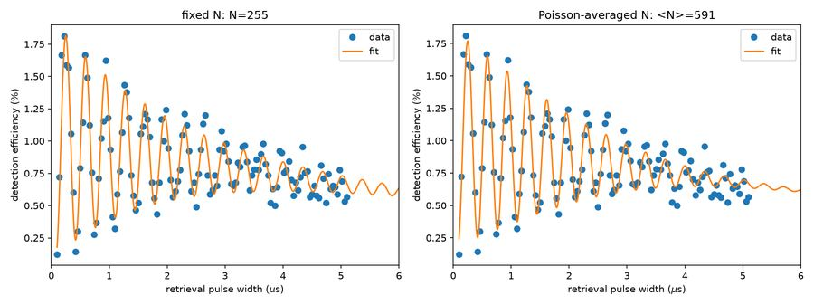
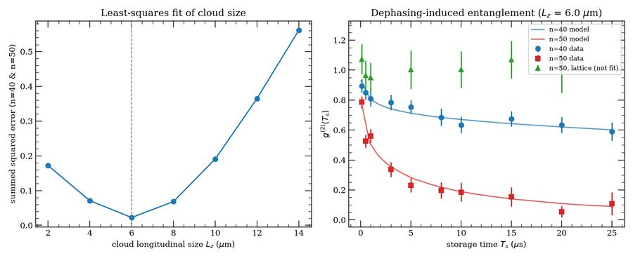
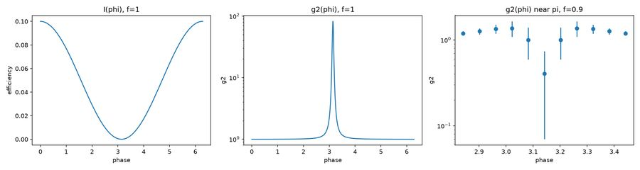
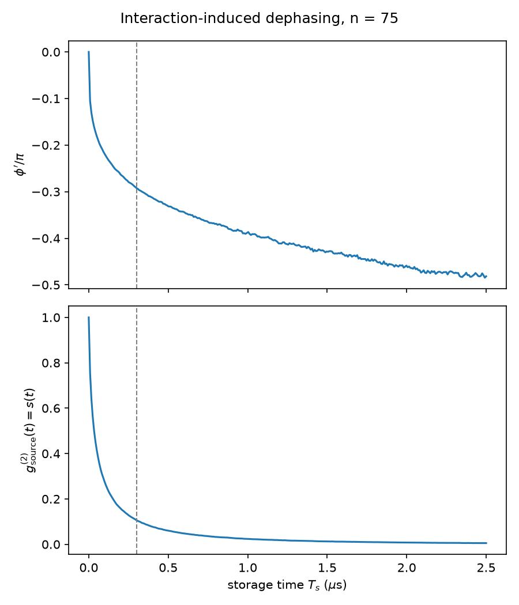
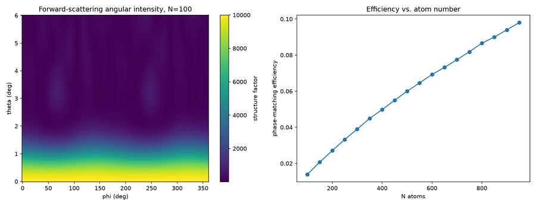

PhD Physicist — neutral-atom quantum computing, Rydberg-atom quantum optics, and collective-qubit control. Original research code for five published papers below; two of them are also reproduced gate-level in Google Cirq in a private companion repo.
The author's original NumPy/SciPy/C++ research code behind five papers, lightly cleaned up into standalone scripts (dead cells and duplicate notebooks removed) rather than rewritten into any framework.


Interaction-induced dephasing converts an unentangled spin wave into an entangled Dicke state; g⁽²⁾(Tₛ) → 0.
Also reproduced gate-level in Cirq — private repo Click for the 4 scripts in this directory →
g⁽²⁾(φ) for factorized/truncated collective atomic states interfering with a reference field; interaction-induced dephasing for uniform and Gaussian clouds.
Click for the 4 scripts in this directory →

Three independent lines of exploratory work, kept as standalone scripts rather than a single project.
Click for the 5 scripts across all three →